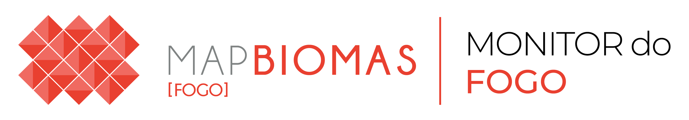

Área queimada
—

Boletim mensalBrasil
Pico do ano
—
Vegetação nativa
—
Comparado à média
—
Comparado ao mês anterior
—
Área queimada por mês
O que queimou
Classes de uso e cobertura do MapBiomas
Classes de nível 2 do MapBiomas. Floresta: formação florestal, floresta alagável, mangue e restinga arbórea. Campo: formação campestre, afloramento rochoso, apicum e restinga herbácea. Agricultura: lavouras temporárias e perenes. Outras: silvicultura, áreas não vegetadas e água.
Territórios
Área queimada por estado
Estados
Área queimada por bioma
Biomas
Percentual em relação à área queimada no Brasil no mês.
Outros territórios: os 10 mais afetados de cada tipo
Municípios
Unidades de conservação
Terras indígenas
Bioma mais afetado
Cicatrizes de fogo no mês
Em vermelho, a área queimada no mês mapeada pelo Monitor do Fogo, recortada pelo limite do bioma.
O que queimou no bioma
Classes de uso e cobertura do MapBiomas
Estado mais afetado
Área queimada por município
Municípios mais afetados
O que queimou no estado
Proposta em desenvolvimento
As páginas a seguir (5 a 7) são sugestões de novas análises para o boletim. Ainda não fazem parte do boletim oficial do Monitor do Fogo.
Proposta em desenvolvimento · esta página ainda não faz parte do boletim oficial
Fora do normal?
Quanto cada ano ficou acima ou abaixo da média
Biomas
Estados que mais fugiram do normal
Proposta em desenvolvimento · esta página ainda não faz parte do boletim oficial
Dinâmica temporal e concentração do fogo
Sazonalidade, áreas protegidas e concentração do fogo no mês.
Calendário do fogo no Brasil
Fogo em áreas protegidas
Concentração do fogo nos municípios
Os 10 municípios com mais área queimada
Quem são os municípios que somam metade da área queimada
Sobre este boletim
Informações técnicas e institucionais para quem quer conferir, reproduzir ou aprofundar os números deste boletim.
Território
Vale para todo o painel.
Destaques do período
O período vale para os destaques, o uso e cobertura, o mapa e os rankings. Os gráficos do histórico mostram todos os anos e marcam estes meses.
Área queimada
—
Contra o ano anterior
—
Contra a média histórica
—
Mês com mais fogo
—
Todos os anos de , mês a mês. Os anos escolhidos em “Comparar com” aparecem nas mesmas cores nos três primeiros gráficos.
Sazonalidade
Acumulado
Série anual
Calendário do fogo
Quanto mais escura a célula, mais área queimou. Passe o mouse para ver o valor.
O que queimou em , pelas classes de uso e cobertura do MapBiomas.
No período
Ano a ano
Mapa
Ranking
Fonte: MapBiomas Monitor do Fogo. Os valores são de área queimada (cicatrizes de fogo), não de focos de calor. Fundo branco; limites: Monitor do Fogo.